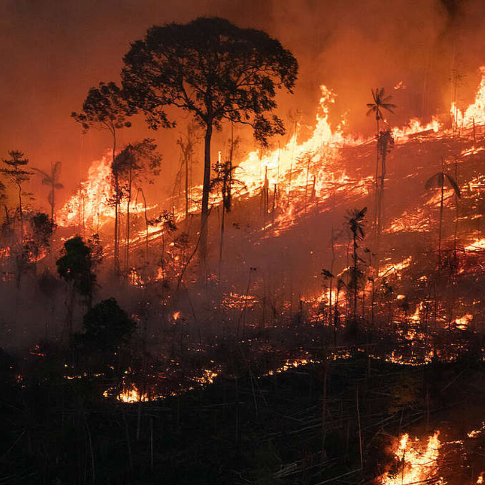

MandellicFires
Home

Preventing fires is a critical and proactive approach to safeguarding our natural environments, communities, and resources. It involves the implementation of various strategies, such as maintaining firebreaks, practicing responsible land management, and raising awareness about fire safety.
all rights reserved